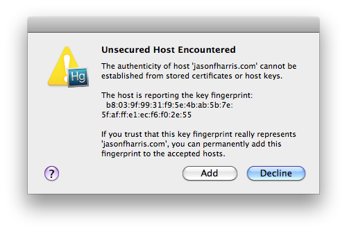
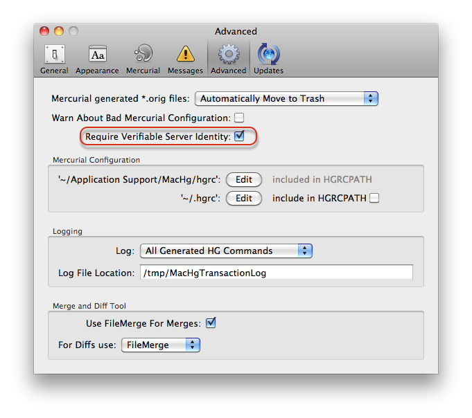

When MacHg uses https to communicate with a server, the issue of server identification and certificates is encountered — i.e., how do you know that the server you are talking to is actually the real server? (This is the reverse of problem of how does the server know that it's actually the real you who is contacting it.)
'HTTPS' stands for "HyperText Transport Protocol Secure." HTTPS is the same thing as HTTP, but uses a secure socket layer (SSL) for security purposes. Some examples of sites that use HTTPS include banking and investment websites, e-commerce websites, and most websites that require you to log in. Websites that use the standard HTTP protocol transmit and receive data in an unsecured manner. This means it is possible for someone to eavesdrop on the data being transferred between the user and the Web server.
In order to recognize a server is actually the server it claims to be, in broad terms the server sends you a certificate digitally signed by some Certificate Authority agency e.g. Verisign or Thawte, which says that this server is indeed authentic.
However, there are two issues with this:
MacHg automatically locally installs the standard set of certificates trusted by Mozilla's Firefox. These certificates are stored in the file ~/Application Support/MacHg/TrustedCertificates.pem. Through this TrusteCertificates.pem file MacHg will automatically securely connect to standard Mercurial hosting servers like bitbucket, google code, kiln, etc. without notifying you that it is doing so.
If you have your own server or a company server, which uses a certificate which is self-signed, or signed by an authority not in the certificates in TrustedCertificates.pem, then you can add this certificate to TrustedCertificates.pem. You do this by opening the TrustedCertificates.pem file and copying and pasting the text of the new certificate at, say, the end of the file. Of course, this means that you need to obtain the text of the server's certificate in a secure way. However, if you connect to the server via the internet in order to obtain this certificate in the first place, then you could be subject to a man in the middle attack, etc. Thus it's best to obtain this certificate in an offline way — e.g. walk to your server and copy the key on a pen drive, or use an ssh session which you already know is secure.
Mercurial 1.7.4 introduced host fingerprint keys in much the same way that ssh uses fingerprint keys. When connecting to a server via https and the server's certificate is self-signed or your system does not have any information about the authority who signed the certificate, then MacHg gives you the option of recognizing the host through a "fingerprint" in future connects. MacHg does this by presenting you with an alert like:

Of course, if you use this method, you have to know that the fingerprint truly does represent the host, and there is no intervening entity.
Fingerprints are stored in the section hostfingerprints in the configuration file ~/Application Support/MacHg/. Once you locally store the fingerprint for a server, then it will be verifiably identified in future connects.
While trying to debug connection problems with https, it might be convenient to disable all server identification checking. This can be done through selecting the Advanced Preferences tab of MacHg's preferences and unchecking the item "Require Verifiable Server Identity".

However, this should be used only as a last resort, since it turns off host identification for all servers.